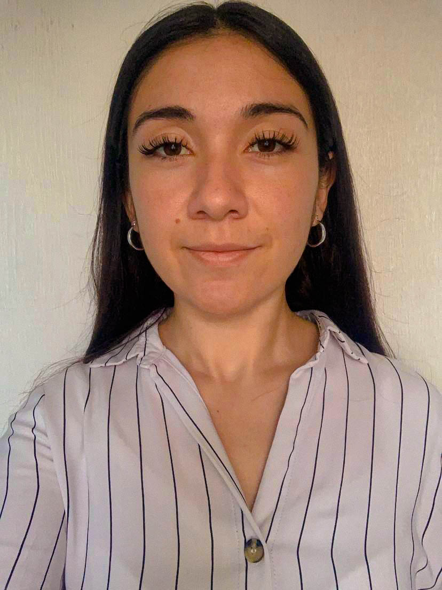

Vanessa Sutherland | WDD 130
Hello! My name is Vanessa Sutherland, and I was born and raised in Santiago, Chile, a really big city near of the andean mountains and coast, I developed a passion for exploration and storytelling. I pursued a degree in Geology and have since worked as a geotechnical engineer, using my expertise to understand and work with the natural landscapes that have always inspired me. Beyond my professional life, I'm a enthusiast photographer, capturing the colors and unique landscapes of the world around me. My weekends often find me trekking or spending time with my family. I'm also a lifelong learner, constantly seeking to expand my horizons. Recently, I've taken up programming to integrate technology into my work, aiming to combine my scientific knowledge with innovative digital tools. This journey has not only been a means to advance my career but also a personal challenge that has reignited my curiosity. I look forward to what the future holds, eager to continue learning, growing, and making a positive impact.